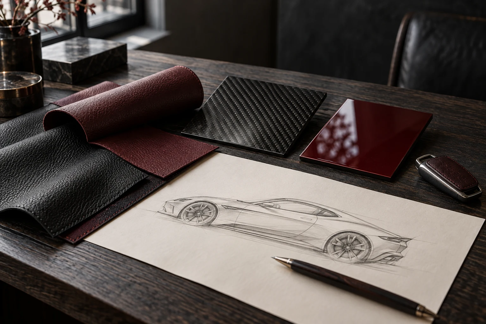
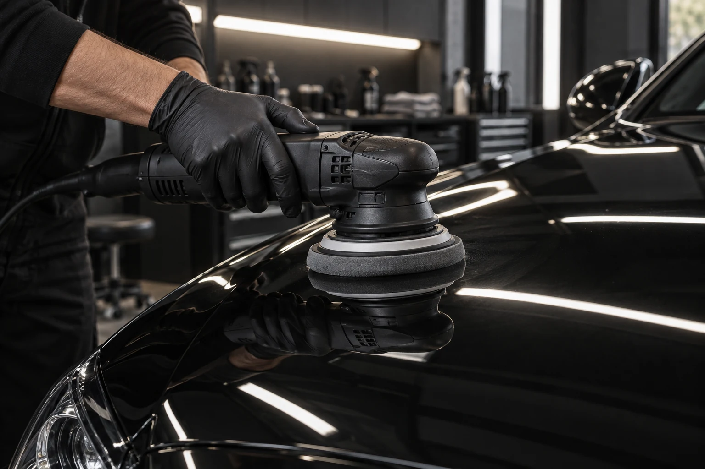
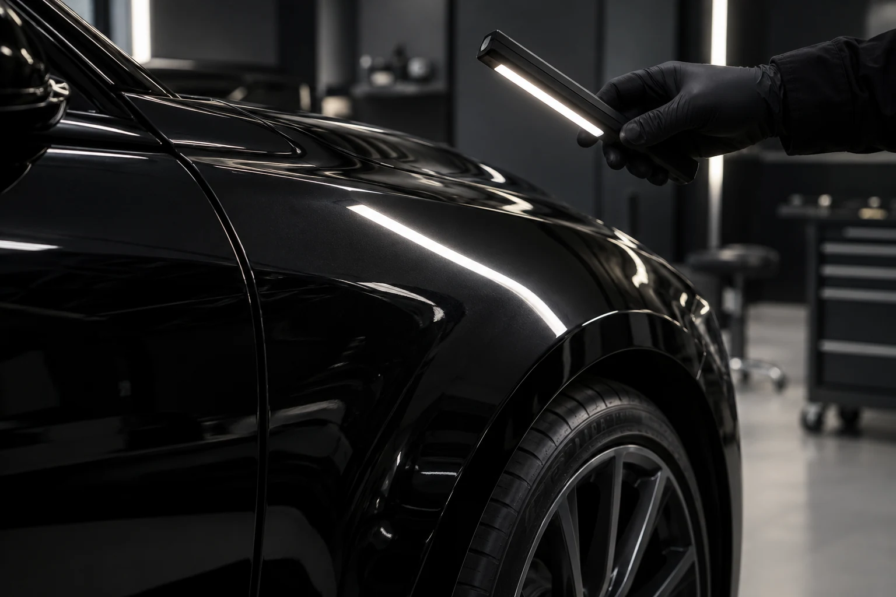
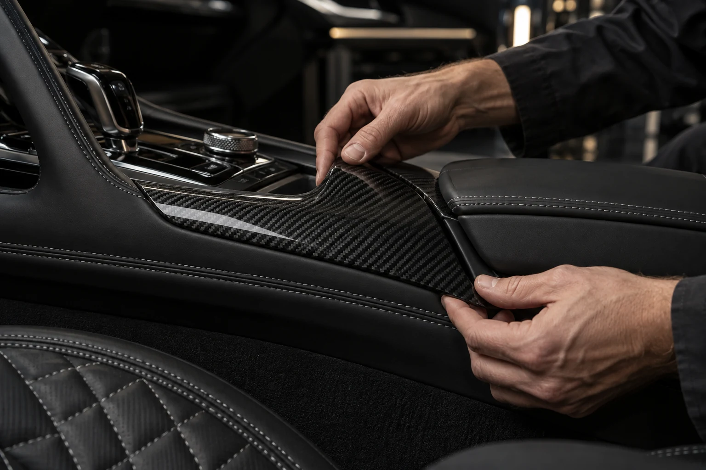
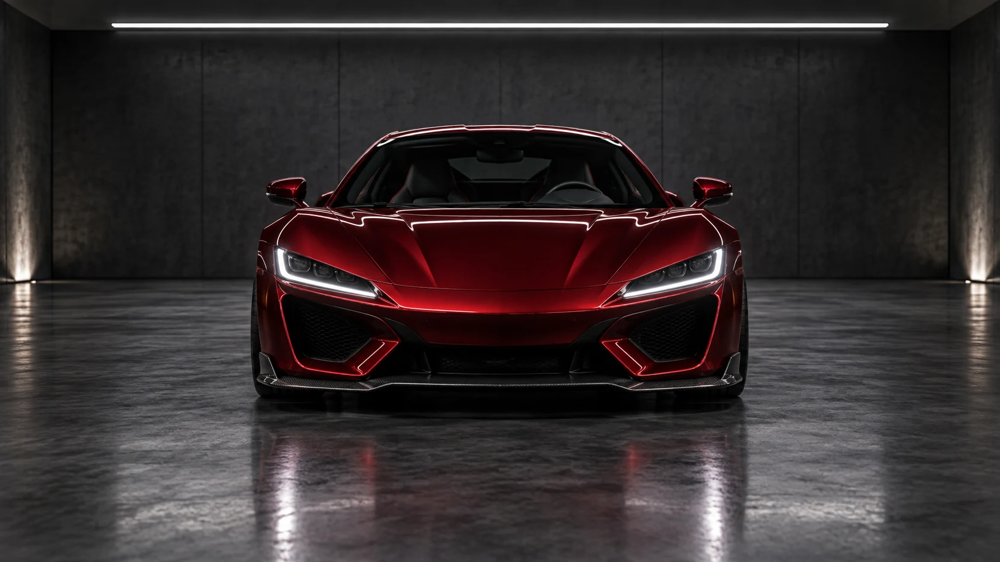
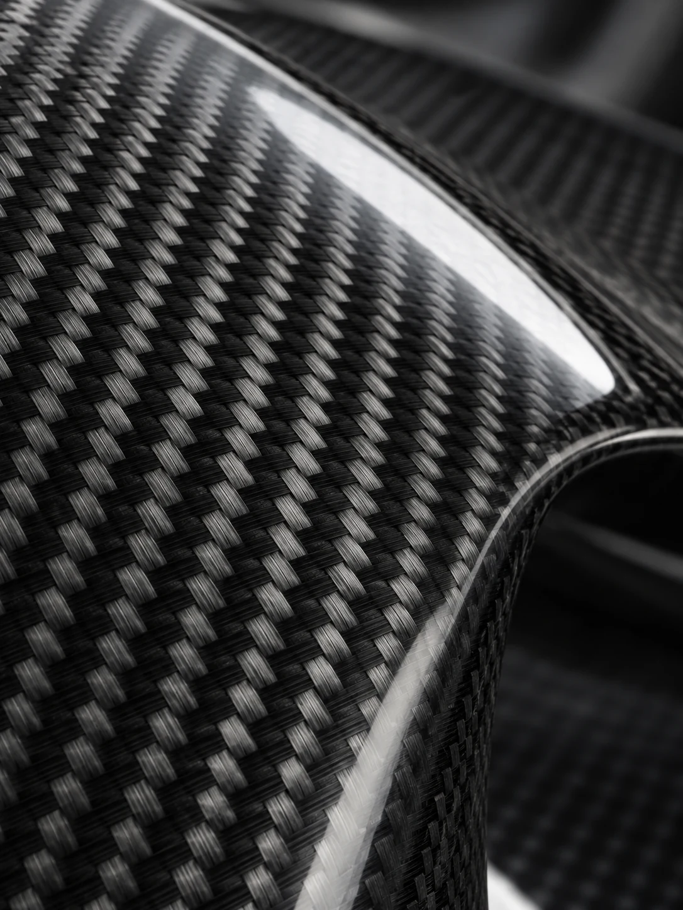
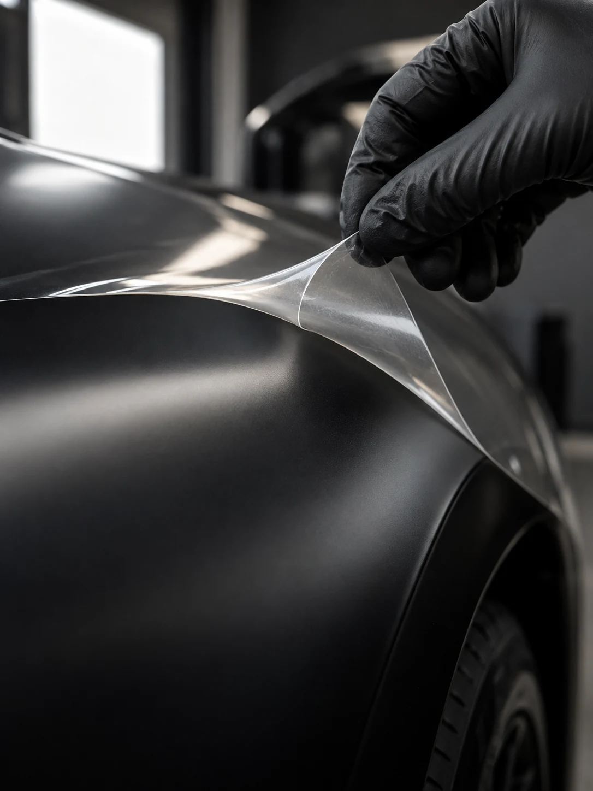
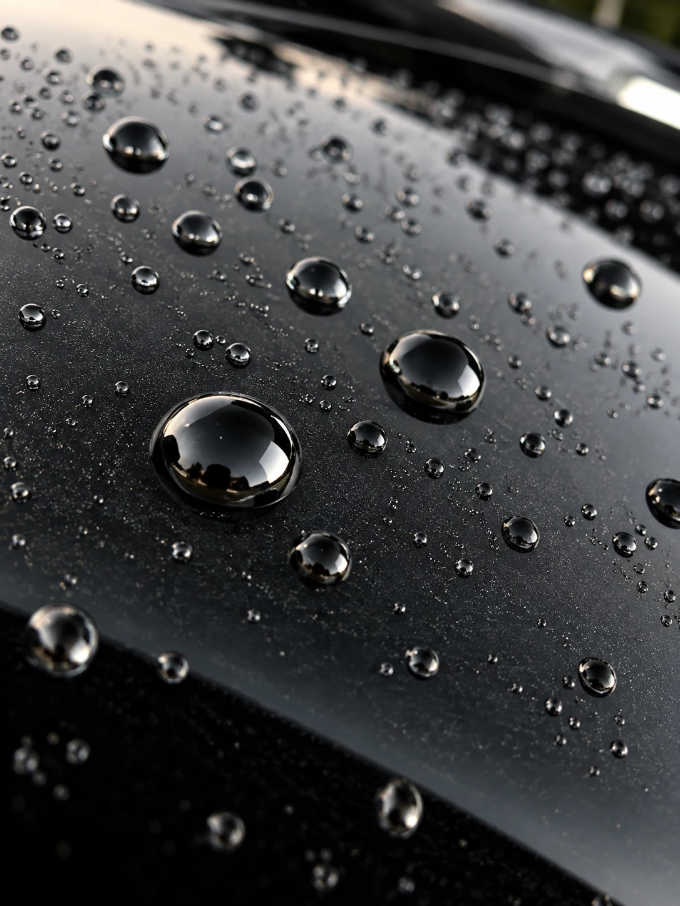
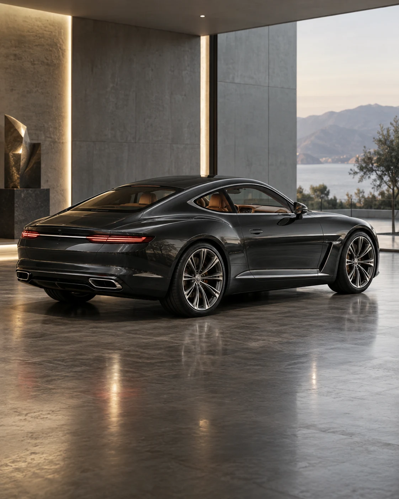

Identité
Chaque création commence par la personne derrière le volant : son goût, son style de vie, sa présence et son identité sur la route.
Démarrer votre projet
Nous ne modifions pas les véhicules
Un atelier automobile de luxe dédié au design sur mesure, à la performance et au savoir-faire.
Pose de film, polissage, contrôle sous lumière rasante : ce qui se voit à la livraison s'est décidé ici, à la main.
Posé à la main, bords rentrés, sans découpe visible : la protection ne se voit pas, c'est la peinture dessous qui reste intacte.
Correction des défauts, puis finition au grain le plus fin. Le panneau doit renvoyer la lumière sans la déformer.
Sous lumière rasante, la moindre trace se voit. Le véhicule ne quitte l'atelier qu'une fois la surface sans défaut.





Chaque décision est intentionnelle, chaque détail a un sens, selon vos goûts, votre style de vie et vos exigences.
Démarrer votre projet
Chaque création commence par la personne derrière le volant : son goût, son style de vie, sa présence et son identité sur la route.
Démarrer votre projet
Extérieur, intérieur et performances sont réunis dans une approche réfléchie, guidée par le détail, pour une vision complète et aboutie.
Démarrer votre projet
Chaque modification est choisie avec précision : aucun élément n'est là par hasard, chaque détail apporte équilibre et distinction à la création finale.
Démarrer votre projetDes véhicules construits sur la distinction, le désir et l'identité. Nous ne les modifions pas : nous les construisons pour vous.
Chaque ligne, chaque matière et chaque finition sont considérées. Nos services sont pensés avec intention : du style extérieur au raffinement intérieur, en passant par les performances, le detailing et les finitions sur mesure. Chaque détail affine le caractère du véhicule sans jamais le dominer.
Démarrer votre projet
Une finition ne se choisit pas pour son effet : elle se choisit pour ce qu'elle change à la présence du véhicule. Explorez chaque finition dans ses moindres détails.

01Trame tissée apparente, vernie ou mate : le carbone se choisit comme une teinte, jamais comme un accessoire.

02Protection ou transformation : satiné, mat, coloré ou translucide, posé sans découpe visible.

03Un traitement qui fait glisser l'eau : les perles roulent, la carrosserie reste nette et se lave plus vite.
 04
04
Rouge profond ou noir intense : une teinte se juge à la façon dont elle tient la lumière sous les projecteurs.
 05
05
Signature diurne, teinte de projecteur, ambiance intérieure : la lumière donne son expression au véhicule.
De la carrosserie à l'échappement, nous intervenons sur l'ensemble du véhicule pour créer une pièce cohérente, personnelle et parfaitement maîtrisée.
Parler de votre projetDe l'aéro aux éléments en carbone, la carrosserie transforme la présence du véhicule sans trahir son caractère d'origine.
Matières, surpiqûres, habillages et finitions : l'habitacle devient un espace d'identité, de confort et de maîtrise.
Des montes sur mesure pensées pour l'assiette, les proportions et la présence sur la route, en cohérence avec la mécanique.
L'éclairage donne son expression au véhicule : du léger teintage aux signatures lumineuses, nous dessinons l'atmosphère.
Des évolutions choisies pour la sonorité, la réponse et la présence. Pas du bruit pour du bruit : une matière sonore plus profonde.
Films de protection, satinés ou colorés : préserver la finition d'origine tout en transformant visuellement le véhicule.
Des expressions complètes du goût, de l'intention et de la singularité, façonnées par le détail, la retenue et la présence.


Un projet ne commence pas par un devis mais par une conversation. Le reste suit un ordre précis, du premier croquis à la remise des clés.
Parler de votre projetUne rencontre, le véhicule, vos références et vos refus. Nous reformulons le projet jusqu'à ce qu'il soit net avant de dessiner quoi que ce soit.
Silhouette, matières, teintes, jantes, sonorité : chaque choix est proposé, chiffré et arrêté avec vous, jamais à votre place.
Pose, polissage, assemblage, contrôle sous lumière rasante. Le véhicule ne quitte l'atelier qu'une fois chaque détail validé.
Livraison accompagnée, entretien des finitions et suivi dans le temps. Un véhicule construit pour vous se suit dans la durée.

Une collection de véhicules construits sur mesure, façonnés par l'artisanat, le caractère et les personnes derrière le volant.
Explorer les réalisationsDes véhicules disponibles à l'achat, raffinés avec intention, préparés avec exigence et prêts à s'affirmer.
Voir le stock